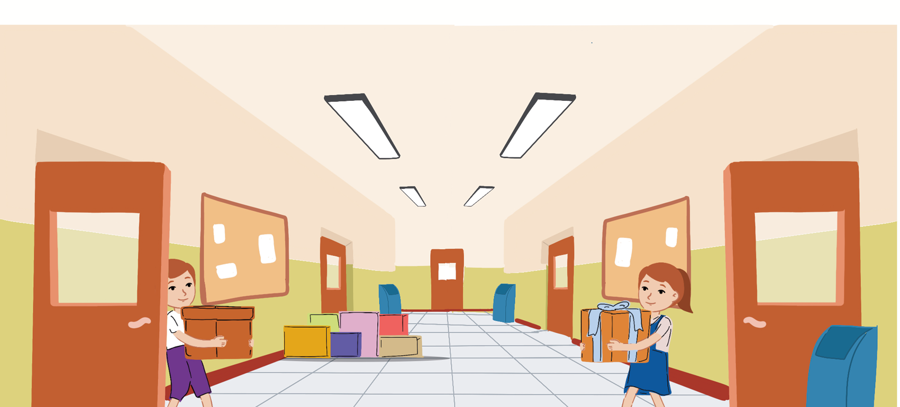

Lidhjet dhe bashkëpunimi me të tjerët
E mira jonë e përbashkët
Situata 1.
Ishin festat e fundvitit. Moti i ftohtë i fundvitit nxiti fëmijët e shkollës që të mendonin për fëmijët në nevojë. Nën moton “Dhurojmë copëza lumturie”, nxënësit organizuan një aktivitet bamirësie.
Secili fëmijë, sipas mundësive, do të sillte diçka që do t'u dhurohej fëmijëve në nevojë. Mund të ishin rroba që fëmijët nuk i përdornin më, mund të ishte ndonjë shall apo doreza, ndonjë fletore apo mjet tjetër shkollor, ndonjë produkt higjienik apo çfarëdo tjetër që do t'i lehtësonte ditët e ftohta të dimrit.
Të gjithë kishin sjellë dhurata të bukura. Ata po diskutonin me njëri-tjetrin për dhuratat që i kishin përgatitur me shumë dashuri për fëmijët në nevojë.
